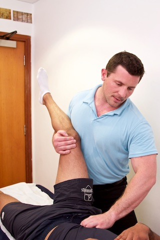
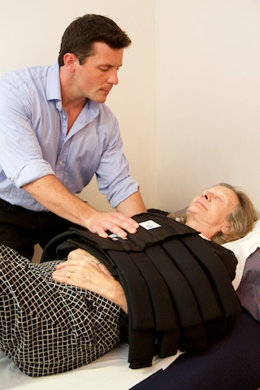

The objectives of Cane Osteopathy are to treat patients with a wide variety of musculoskeletal problems in as holistic a way as possible. I am an Osteopath registered with the General Osteopathic Council, holding a sports therapy diploma and am also a strength and conditioning coach with over 10 years experience.
I can help with a variety of issues that arise from problems in the muscular and skeletal systems.
There is evidence that osteopathy can help with:
The Advertising Standards Authority and the Committee of Advertising Practice find that there is scientific evidence that osteopathy is helpful for these conditions. I use evidence-based practice and clinical experience to inform and guide your treatment. The treatment you receive depends as much on you, as on the symptoms you are presenting with.
My sports therapy and exercise background mean that I am able to:
I tailor each treatment on how you are that day, how are you have responded to prior treatment and your hopes and expectations for total health.
I offer bespoke services for companies interested in staff welfare in Oxford and London through presentations, set up advice and treatment packages.
I work as a strength and conditioning coach with a very limited number of clients, usually with professional sports performance goals. Many thanks to the Oxford Brookes Sports Department and John Harman and Sarah Queralt in particular for their support with this.

